보이지 않는 당신 / 2007
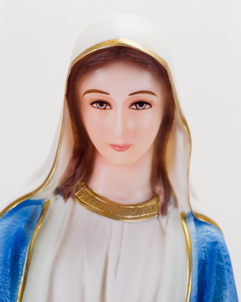
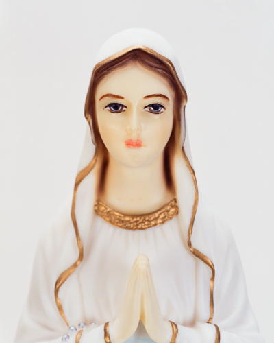
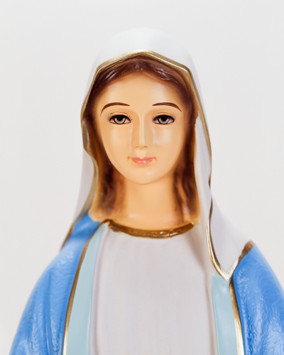
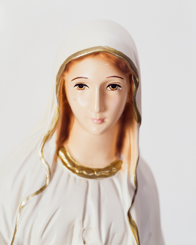
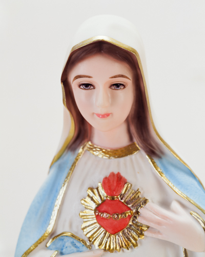
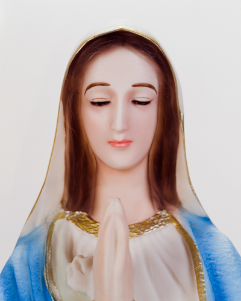
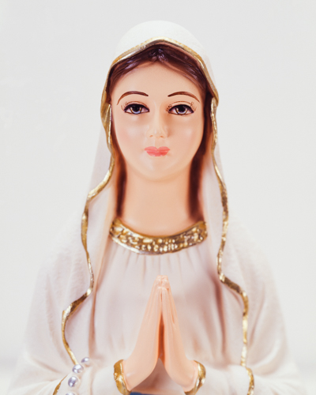
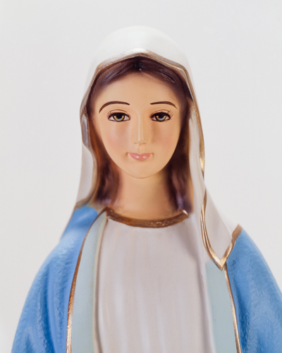
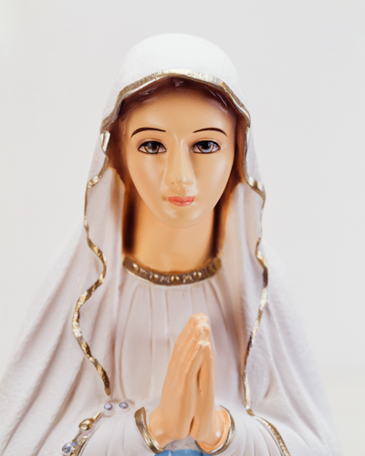
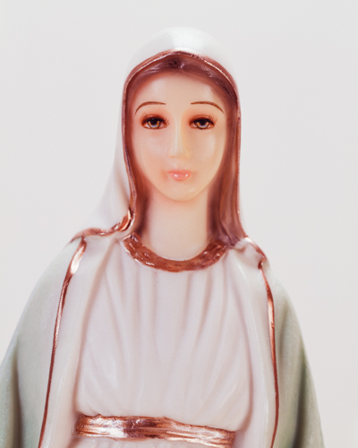
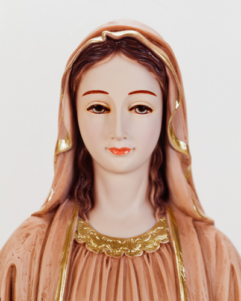
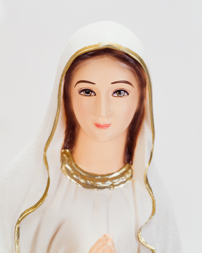
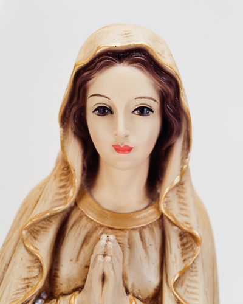
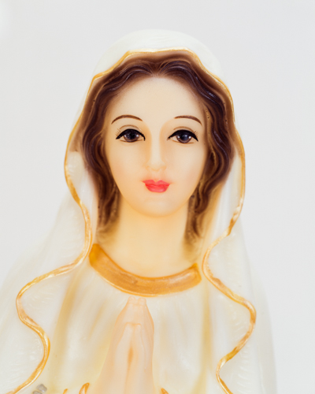
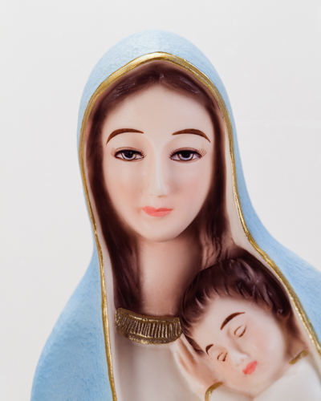
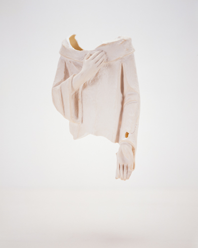
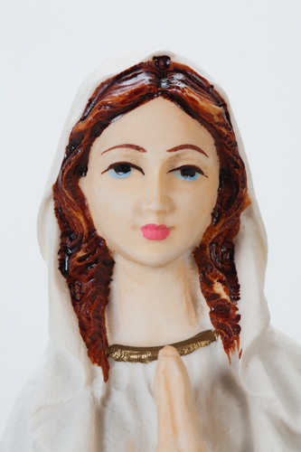
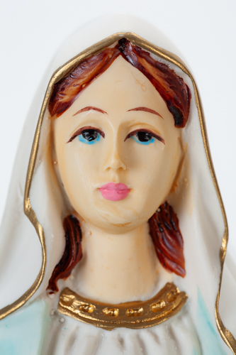
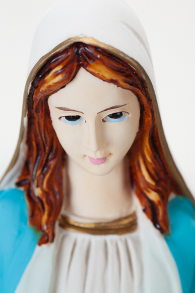
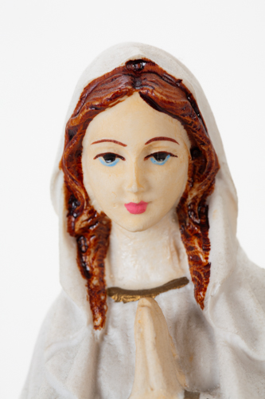
성모상의 시선은 우리와 맞닿지 않는다. 어딘가를 향해 고개를 기울인다거나 허공을 향한 시선은 관념적인 성모를 떠오르게 한다. 기울어진 고개를 바로잡고 제각각의 얼굴과 눈을 마주한다.
타인을 이해할 수 있는 것은 생을 유지하며 겪는 공통의 과정이 있고 욕구와 욕망의 변화가 유형을 갖기 때문이다.
비판에 앞서 수용적이고 주체적, 수평적, 세속적이다. 그러나 탯줄을 부정하며 얻어낸 성스러움의 권위가
윤리, 도덕적 기준에 영향을 미칠 때 선악의 판단은 위계와 맹목으로 치우친다.
차별과 선택을 이용해 구축되고 실재에 기반하지 않는다.
생명현상은 명확한 토대이다. 죽음은 불가결한 조건이자 순환의 고리를 만든다. 또한 개별적이자 보편적인 존재를 가능케 한다.
이것이 나의 '사회적 존재'로서의 본질적인 이해이다. 나아가 관계역학의 구조를 받아들이는 방식이다.
미혼모(비혼모)에게서 두 생명의 관계를 본다. 하나는 생명 그 자체로서 존재하고 순수하게 살고자하는 본능만이 있다. 또 하나는
자신의 욕구 또는 욕망을 사회적 요구와 동일시하는 존재이다. 생의 의지만은 동일하다. 결론은 하나의 희생이다.
여기에 생명현상이 있고 신은 모습을 드러낸다. 단지 선택의 문제이고 어떠한 결정을 하더라도 선하고 성스럽다.
- 2009, 《보이지 않는 당신께》, 갤러리 175, 서울, 개인전